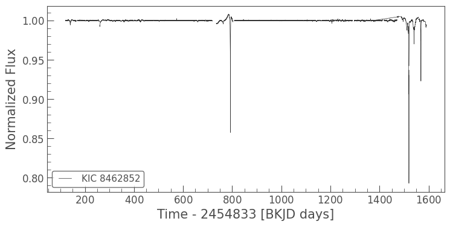
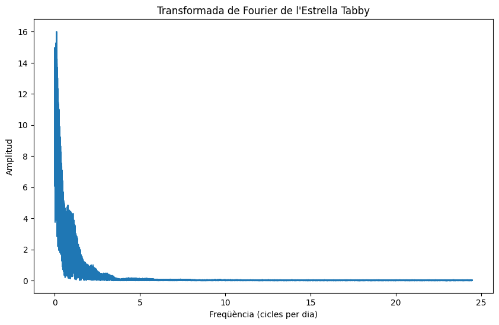
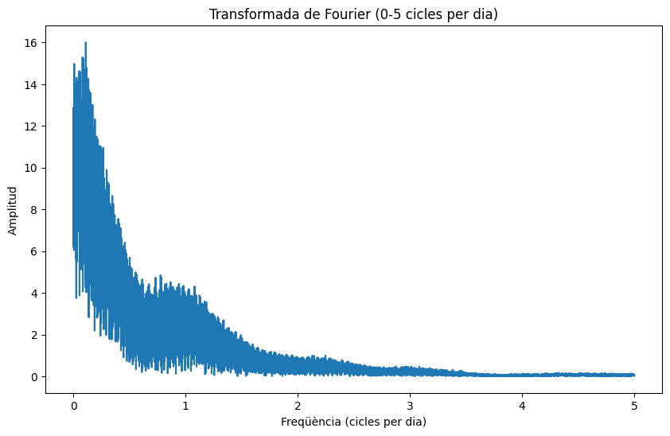

Estudi de l'Estrella Tabby amb Lightkurve
Lightkurve és una eina de Python desenvolupada per a l'anàlisi de dades fotomètriques de missions com Kepler i TESS. Aquí tens algunes idees per estudiar l'estrella Tabby (KIC 8462852) utilitzant Lightkurve:
-
Descàrrega i Visualització de Dades:
- Descàrrega de dades: Utilitza Lightkurve per descarregar les dades de la missió Kepler per l'estrella Tabby.
- Visualització de la corba de llum: Visualitza la corba de llum per identificar els patrons de variabilitat.
-
Anàlisi de la Variabilitat:
- Anàlisi de la transformada de Fourier: Identifica qualsevol periodicitat en les dades.
- Estudi dels dips: Analitza els descensos en la lluminositat per determinar-ne la profunditat, durada i freqüència.
-
Detecció de Trànsits:
- Utilització d'algorismes de detecció de trànsits: Com TESS Transit Search (TLS) per identificar possibles trànsits planetaris.
- Comparació amb models: Compara els descensos de llum observats amb models de trànsits per identificar la naturalesa dels objectes que causen els dips.
-
Anàlisi Estadística:
- Distribució de dips: Estudia la distribució estadística dels dips per veure si segueixen un patró específic.
- Comparació amb altres estrelles: Compara la corba de llum de l'estrella Tabby amb altres estrelles de tipus similar per detectar anomalies.
-
Estudi de la Llum Reflecteda:
- Modelatge de la pols circumstel·lar: Utilitza models per simular com la pols circumstel·lar podria estar afectant la lluminositat de l'estrella.
Implementació amb Lightkurve
A continuació, tens un exemple de codi per començar a treballar amb Lightkurve per analitzar l'estrella Tabby:
Codi per veure la corba de llum de l'estel Tabby
Copiat al portapapers!
import lightkurve as lk
# Descarregar les dades de Kepler per l'estrella Tabby
target = "KIC 8462852"
search_result = lk.search_lightcurvefile(target)
# Baixar els fitxers de corba de llum
lc_collection = search_result.download_all()
# Unir totes les corbes de llum en una sola
lc = lc_collection.stitch()
# Visualitzar la corba de llum
lc.plot()
Aquest codi et permetrà visualitzar la corba de llum de l'estrella Tabby. A partir d'aquí, pots continuar amb anàlisis més avançades segons les idees esmentades anteriorment.
Si necessites més exemples específics o ajuda amb alguna part del codi, només cal mirar la documentació oficial de lightkurve i els codis python al Github del professor
El codi disponible en github anterior del professor i executat en un Google Colab o en qualsevol editor Python senzill com Mu Editor dona aquesta primera imatge:

Aquest codi que tens a continuació descarrega i processa les dades de corba de llum de l'estrella Tabby (KIC 8462852) des de la missió Kepler, elimina tendències llargues i aplica la transformada de Fourier per analitzar les components freqüencials de les variacions de lluminositat. Això pot ajudar a detectar periodicitats que podrien indicar la presència d'exoplanetes o altres fenòmens. A continuació es mostra el codi amb comentaris detallats:
Codi per fer Transformades de Fourier amb la corba de llum de l'estel Tabby
Copied to clipboard!
# Instal·lació de Lightkurve i altres biblioteques necessàries
!pip install lightkurve numpy matplotlib
# Importar les biblioteques necessàries
import lightkurve as lk
import numpy as np
import matplotlib.pyplot as plt
'''
La transformada de Fourier (TF) és una tècnica matemàtica que transforma una funció del domini del temps
a una funció del domini de les freqüències. En el context d'una corba de llum astronòmica,
la TF permet identificar les components freqüencials de les variacions de la lluminositat
de l'estrella. Això és útil per detectar periodicitats o cicles en les dades, que poden
indicar fenòmens físics com la presència d'exoplanetes, estrelles binàries, o altres fenòmens
astrofísics. La TF descompon la corba de llum en una suma de sinusoides amb diferents
freqüències i amplituds.
'''
# Descarregar les dades de Kepler per l'estrella Tabby
target = "KIC 8462852" # Definir l'objectiu, l'estrella Tabby
search_result = lk.search_lightcurvefile(target) # Cercar arxius de corba de llum per l'estrella
# Baixar els fitxers de corba de llum
lc_collection = search_result.download_all() # Descarregar tots els arxius de corba de llum trobats
# Unir totes les corbes de llum en una sola
lc = lc_collection.stitch() # Combinar totes les corbes de llum en una única corba contínua
# Eliminar valors NaN i normalitzar la corba de llum
lc = lc.remove_nans().normalize() # Eliminar valors NaN i normalitzar la corba per a una millor anàlisi
# Eliminar tendències llargues amb un filtre Savitzky-Golay
lc_detrended = lc.flatten(window_length=401) # Aplicar un filtre per eliminar tendències de llarg termini
# Visualitzar la corba de llum processada
lc_detrended.plot() # Gràfic de la corba de llum processada
plt.show() # Mostrar el gràfic
# Aplicar la Transformada de Fourier
fft = np.fft.fft(lc_detrended.flux) # Calcular la TF de la corba de llum
frequencies = np.fft.fftfreq(len(fft), lc_detrended.time[1].value - lc_detrended.time[0].value) # Calcular les freqüències corresponents
# Filtrar les freqüències positives
positive_frequencies = frequencies[frequencies > 0] # Filtrar per obtenir només les freqüències positives
positive_fft = np.abs(fft[frequencies > 0]) # Obtenir l'amplitud de les components de freqüència positives
# Visualitzar el resultat de la Transformada de Fourier
plt.figure(figsize=(10, 6)) # Definir la mida de la figura
plt.plot(positive_frequencies, positive_fft) # Gràfic de l'espectre de freqüències
plt.xlabel("Freqüència (cicles per dia)") # Etiqueta de l'eix X
plt.ylabel("Amplitud") # Etiqueta de l'eix Y
plt.title("Transformada de Fourier de l'Estrella Tabby") # Títol del gràfic
plt.show() # Mostrar el gràfic
# Ampliar l'àrea entre 0 i 5 cicles per dia
plt.figure(figsize=(10, 6)) # Definir la mida de la figura
mask = (positive_frequencies > 0) & (positive_frequencies <= 5) # Crear una màscara per seleccionar el rang de freqüències desitjat
plt.plot(positive_frequencies[mask], positive_fft[mask]) # Gràfic de l'espectre de freqüències per al rang seleccionat
plt.xlabel("Freqüència (cicles per dia)") # Etiqueta de l'eix X
plt.ylabel("Amplitud") # Etiqueta de l'eix Y
plt.title("Transformada de Fourier (0-5 cicles per dia)") # Títol del gràfic
plt.show() # Mostrar el gràfic
 